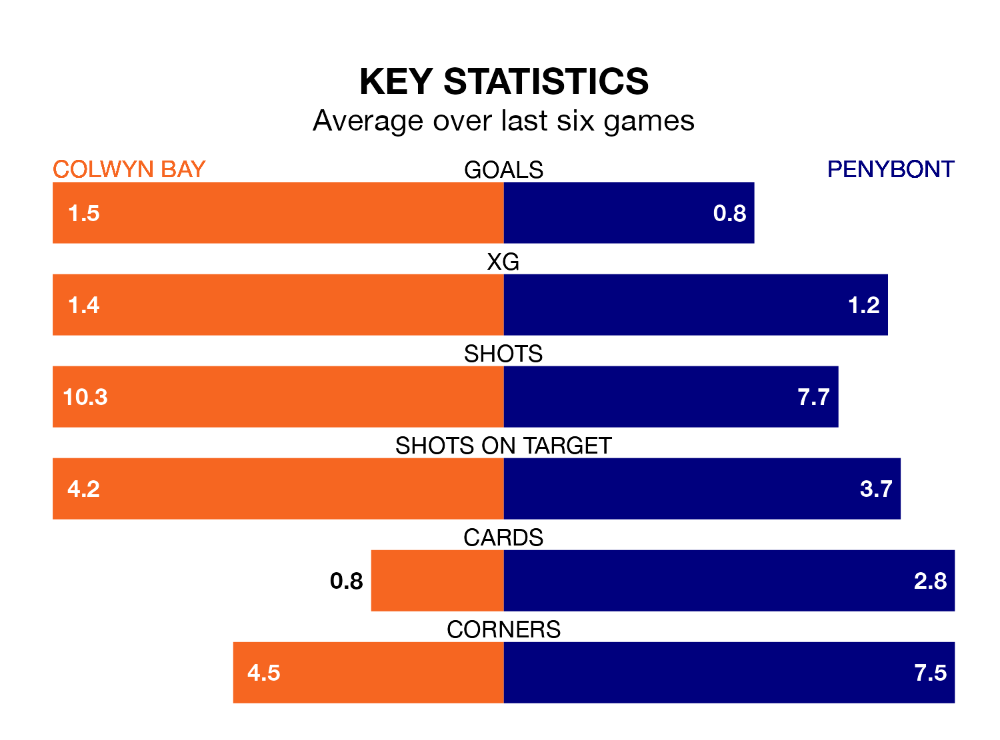

Penybont travel to the Four Crosses Construction Arena for Saturday's early match against Colwyn Bay looking to bounce back from defeat last time out in Welsh Premier League.
Bont, who sit zero in the league after 22 games, fell to a 1-0 home defeat to Connah's Quay on January 13.
They face a Colwyn Bay side who also lost their last match, a 3-2 defeat to Pontypridd Town AFC, and who sit zero in the table.
Colwyn Bay are in awful form in Welsh Premier League, with no wins and six losses from their last six games.
With two wins and a draw over that period, Penybont's form is much better – they have taken seven points from 18, compared to the home team's zero.
With 27 goals in 22 games so far this season, Colwyn Bay are the league's joint--1th-lowest scorers with 1.2 goals per game. And they are conceding more than average, letting in 49 goals at a rate of 2.2 per game.
Bont are also below average scorers, with 1.3 goals per game, compared to a league average of 1.5. They have conceded 1.5 goals per game.
Over the last two years, Colwyn Bay and Penybont have played each other twice. Colwyn Bay won both of them.
Their last meeting was on November 25, when Colwyn Bay won 2-1 at home.
Updated: 13:20 (UTC), 29/01/24